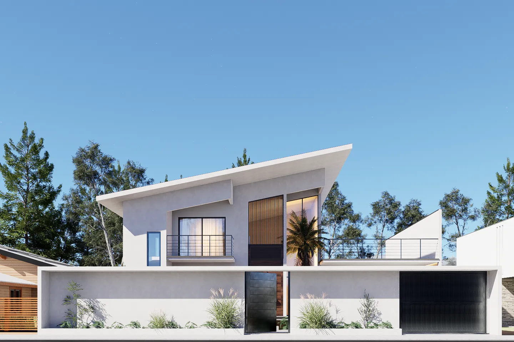
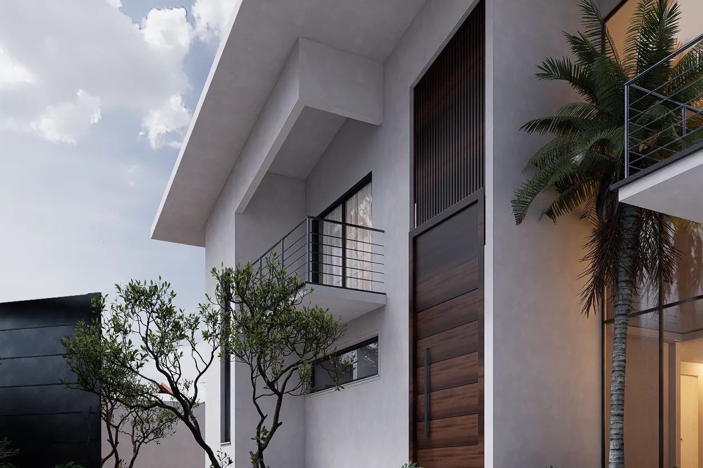
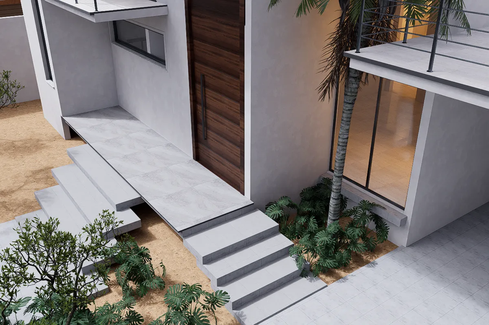
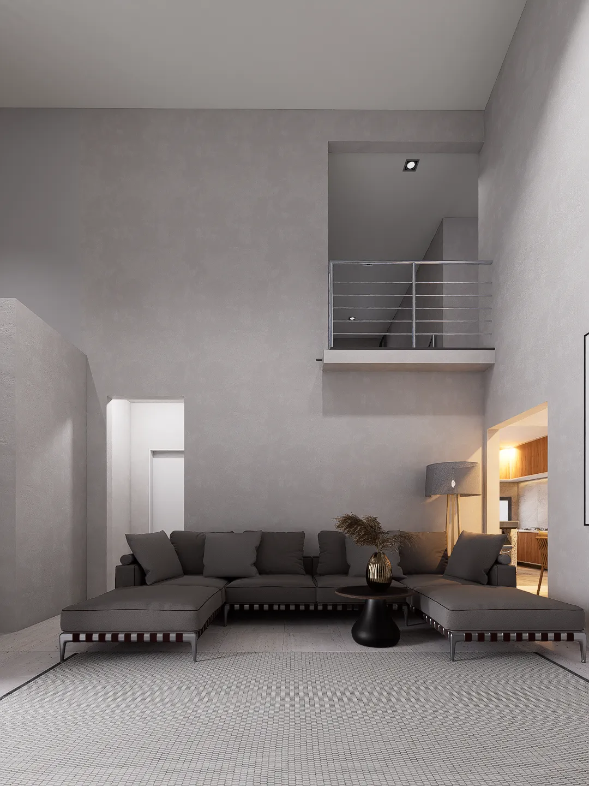
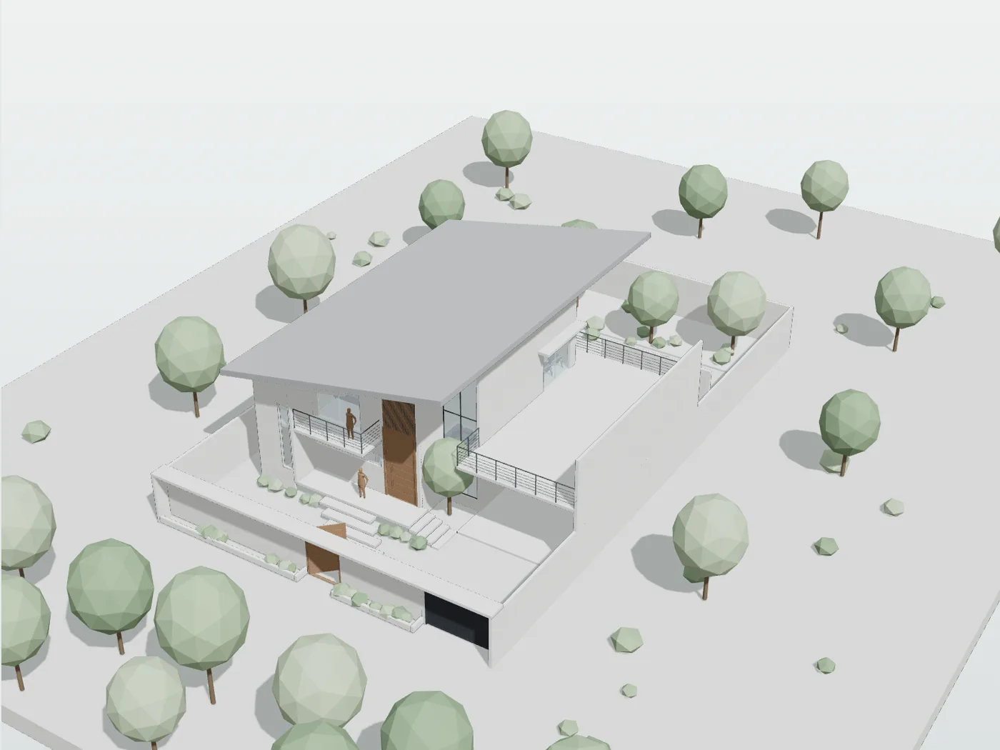
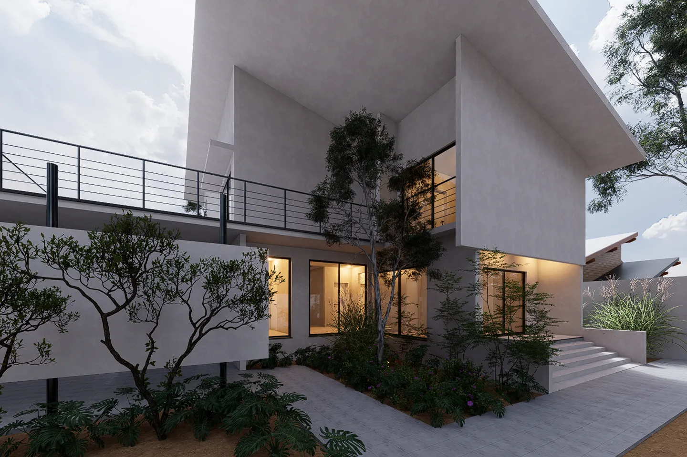

Chegada
Da rua, a casa lê-se num só gesto: uma cobertura inclinada que se prolonga em consola sobre a fachada.
Volumes claros, painéis ripados de madeira e grandes vãos de vidro. A garagem cobre duas viaturas e fica dentro do mesmo volume.



Entrada
Sobem-se os degraus e a porta faz o resto. É pivotante, roda sobre um eixo e abre a casa de uma só vez.
- Largura
- 1,60 m
- Altura
- 3,65 m
Agora, olhe para cima.
Sala de estar
21,98 m² no chão. Por cima, nada até ao tecto do piso de cima.
O vazio de pé-direito duplo liga os dois pisos e traz luz natural ao centro da casa.
O piso superior debruça-se sobre a sala a +3,60. Por cima da sala ficam 26,29 m² de ar.

Maquete
O modelo do projecto, tirado do Revit. Rode a casa, baixe o plano de corte para a ver piso a piso, ou entre em Passeio e percorra-a à altura dos olhos.

A carregar a maquete…

A Aschip desenha casas onde a luz e o espaço foram pensados ao centímetro.
Se quer uma casa pensada assim, Falar com a Aschip no WhatsApp.
| Programa | Moradia unifamiliar, 2 pisos |
|---|---|
| Piso térreo | 186,44 m² |
| Piso superior | 170,45 m² |
| Vazio sobre a sala | 26,29 m² |
| Garagem | 78,64 m², 2 viaturas |
| Cobertura | Chapa de zinco, 20 % |
| Pavimento | Porcelanato 90 × 90 cm |